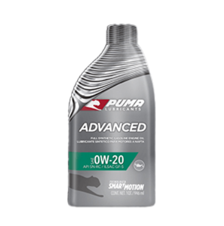

NUESTROS LUBRICANTES
Algunos de nuestros Lubricantes PUMA
Los lubricantes Puma están diseñados para ofrecer un rendimiento superior y una protección excepcional para motores modernos y maquinaria industrial. Con fórmulas avanzadas y tecnología de última generación, los productos Puma Lubricants garantizan eficiencia, durabilidad y reducción del desgaste en condiciones extremas. Además, su compromiso con el medio ambiente se refleja en la creación de productos que optimizan el consumo energético, asegurando una operación más limpia y sostenible.

PUMA Advanced XP 0W-20 es un lubricante totalmente sintético formulado con aceites básicos y aditivos de avanzada tecnología.

PUMA Advanced 0W-20 es un lubricante totalmente sintético formulado con aceites básicos y aditivos de avanzada tecnología.

PUMA Advanced 5W-30 es un lubricante sintético de alto rendimiento, especialmente diseñado para los modernos vehículos a nafta (gasolina) y diésel ligero
Algunos de nuestros Lubricantes YPF
Los lubricantes YPF representan calidad y confianza, siendo la elección ideal para mantener los motores funcionando al máximo rendimiento. Con una amplia gama de productos adaptados a las necesidades de vehículos livianos, pesados e industrias, YPF Lubricantes combina innovación tecnológica y experiencia local para garantizar la protección del motor y extender su vida útil. Estos productos están diseñados para soportar las exigencias del mercado argentino, respaldados por años de investigación y desarrollo.
PUMA Advanced XP 0W-20 es un lubricante totalmente sintético formulado con aceites básicos y aditivos de avanzada tecnología.
PUMA Advanced 0W-20 es un lubricante totalmente sintético formulado con aceites básicos y aditivos de avanzada tecnología.
PUMA Advanced 5W-30 es un lubricante sintético de alto rendimiento, especialmente diseñado para los modernos vehículos a nafta (gasolina) y diésel ligero